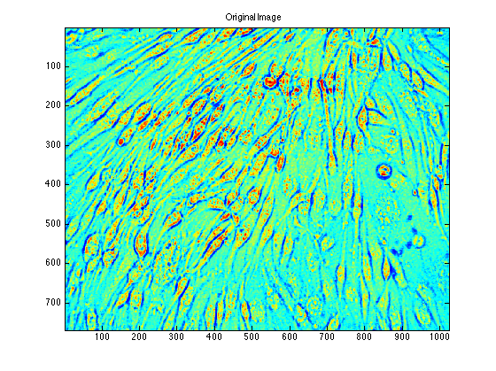
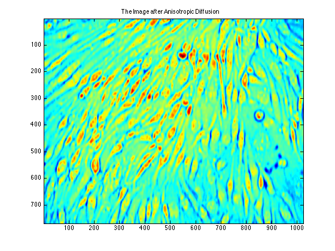
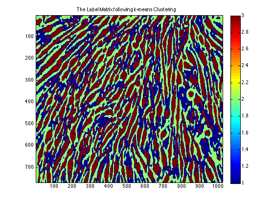
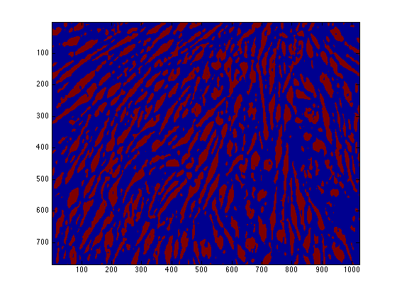
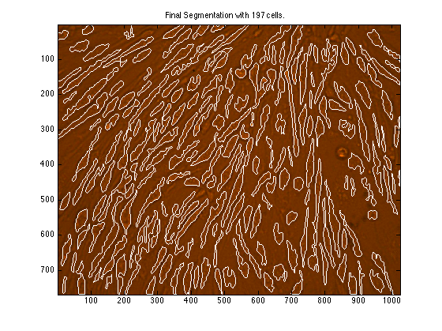

Term Project
Ashutosh Priyadarshy
Digital Image Processing - Spring 2012
Cell Counting and Segmentation
input img = img1
close all; clear all;
img1 = imread('cell1.jpg');
img2 = imread('cell2.jpg'); img2(:, :, 3) = 0;
img3 = imread('cell3.jpg');
original = img2;
img = rgb2gray(img2);
img = adapthisteq(img);
figure; imagesc(img); title('Original Image');
img = anisotropic_diffusion(img, 50, 2);
figure; imagesc(img); title('The Image after Anisotropic Diffusion');
img = imadjust(img); img = adapthisteq(img);
intns = double(reshape(img, [size(img,1)*size(img,2), 1]));
[cluster_idx cluster_center] = kmeans(intns,3);
label_mat = reshape(cluster_idx, [768 1024]);
figure; imagesc(label_mat); title('The Label Matrix following k-means Clustering');
colorbar;
segments = label_mat == 3;
figure; imagesc(segments);
B = bwboundaries(segments);
figure; imagesc(original); title('Original Image with Overlaid Segmentation');
hold on;
cell_count = 0;
for k = 1:length(B)
boundary = B{k};
perim(k) = length(boundary);
if (perim(k) > 80)
cell_count = cell_count + 1;
plot(boundary(:, 2), boundary(:,1), 'w');
end
end
title(['Final Segmentation with ' num2str(cell_count) ' cells.']);
    